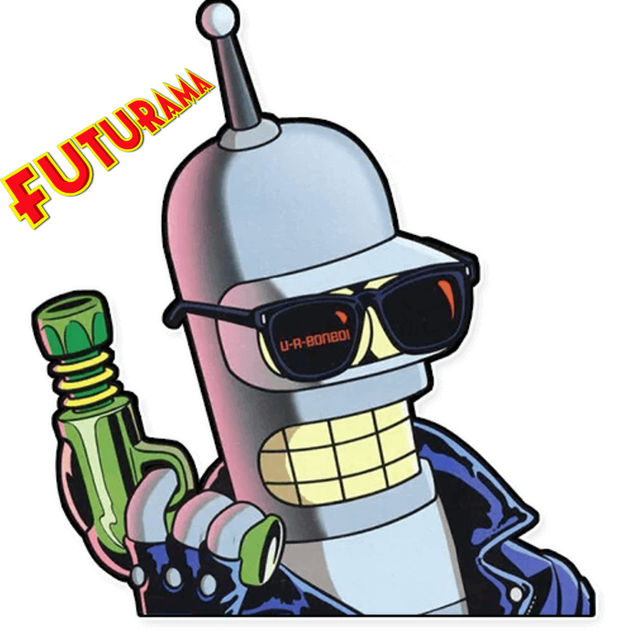

Фильмы про роботов
На данный момент фильмов про роботов довольно много. Некоторые достаточно интересные, некоторые не очень.
Например: Трансформеры, Валли, Футурама (мультсериал), и т.п. Это одни из самых популярных примеров.
Трансформеры
Фильм повествует о войне автоботов и десептиконов — разумных инопланетных роботов, способных трансформироваться в разнообразную технику.
Предметом их раздора становится могущественный артефакт Великая Искра ,
который при неправильном использовании может принести в Галактику разрушения и смерть.
Автоботы прилетают на Землю, чтобы защитить Искру от десептиконов, которые хотят использовать её в своих корыстных целях.
В принципе Трансформеры довльно популярны, и слышал о них каждый хотя бы раз. Поэтому особо рассказывать и нечего.
Живая Сталь
Действие истории разворачивается в будущем,(уже в прошлом:) ) в 2020 году,
когда традиционные боксёрские поединки и другие
боевые искусства утратили зрительский интерес и свою актуальность
из-за недостаточной жестокости и были заменены гладиаторскими боями с участием роботов,
управляемых людьми.
Главный герой — Чарли Кентон, бывший боксер, живущий у дочери своего умершего тренера Бейли Таллет,
принимает участие в боях роботов, терпя одно поражение за другим и всё глубже увязая в долгах. Попутно он узнает, что умерла его бывшая жена,
оставив их сына Макса Кентона сиротой. Продав право на опеку над мальчиком более состоятельным родственникам покойной супруги,
он берет Макса на время под свою опеку, «чтобы наладить отношения отца и сына», а также для получения дополнительных денег.
Футурама
Это американский научно-фантастический сатирический мультсериал,
созданный в студии 20th Century Fox Мэттом Грейнингом и Дэвидом Коэном,
авторами мультсериала «Симпсоны».
В большинстве серий действие сериала происходит в Новом Нью-Йорке в XXXI веке.
Использование будущего времени позволяло авторам шоу вносить в него идеи и события из популярной фантастики XX века.
Сериал начинается с того, что разносчик пиццы из Нью-Йорка Филипп Дж. Фрай случайно был заморожен в криогенной камере ровно в 00 часов 00 минут 00 секунд 1 января 2000 года и разморожен 999 лет и 364 дня спустя — 31 декабря 2999 года. Фрай оказывается в далёком будущем в городе Новый Нью-Йорк. Первым, с кем знакомится Фрай, становится девушка-циклоп Туранга Лила, работающая специалистом, определяющим вид профессиональной деятельности человека на всю его жизнь. Данная информация заносится в специальный чип, который вживляется под кожу. Однако оказывается, что лучшее применение для Фрая — это стать курьером, а он всегда ненавидел свою работу. Тогда Фрай сбегает и начинает исследовать улицы Нового Нью-Йорка, где знакомится с роботом Бендером. В конце концов, их обоих находит Лила, к тому времени уже отказавшаяся от работы инспектором под влиянием Фрая, и втроём они направляются к определённому по тесту ДНК живому потомку Филипа (его многократному правнучатому племяннику) Хьюберту Фарнсворту — 160-летнему гениальному учёному-склеротику, который берёт их на работу в свою небольшую компанию «Межпланетный экспресс» (англ. Planet Express), специализирующуюся на межгалактических грузоперевозках, на должность курьеров. «Межпланетный экспресс» — это маленький бизнес профессора, окупающий его гениальные, но иногда весьма сомнительные исследования и изобретения. Сериал показывает приключения Фрая, Лилы, робота Бендера и многих других персонажей, связанные как с полётами в космос, так и с личностями героев.
«Футурама» получила своё имя от экспозиции фирмы General Motors на выставке New York World’s Fair 1939 года.
Экспозиция демонстрировала видение будущего — мира 1960-х, её основной темой были автомагистрали между штатами,
связывающие все штаты США. На той же выставке был представлен телевизор Фило Фарнсворта,
профессор Фарнсворт был назван в его честь.
Сериал озвучивали: Билли Вест, Кэти Сагал, Джон Ди Маджо, Морис Ламарш, Лоурэн Том, Фил Ламарр и Тресс Макнилл.
Фил Хартман был выбран в качестве озвучивающего актёра, но он погиб ещё до начала производства. Первоначально
персонаж по имени Филип Джей Фрай должен был называться Кёртис, но его имя было изменено в дань памяти Хартману.
Космические корабли и задний план во многих сценах были сделаны с использованием трёхмерной компьютерной графики
(сел-шейдинг, как в игре Borderlands). Сцены сначала рисовались вручную, а затем переносились в 3D. Это обеспечивало
сохранение правильной геометрии окружения и персонажей при движении камеры (например, в начале каждой серии,
когда камера облетает здание «Межпланетного экспресса»).
